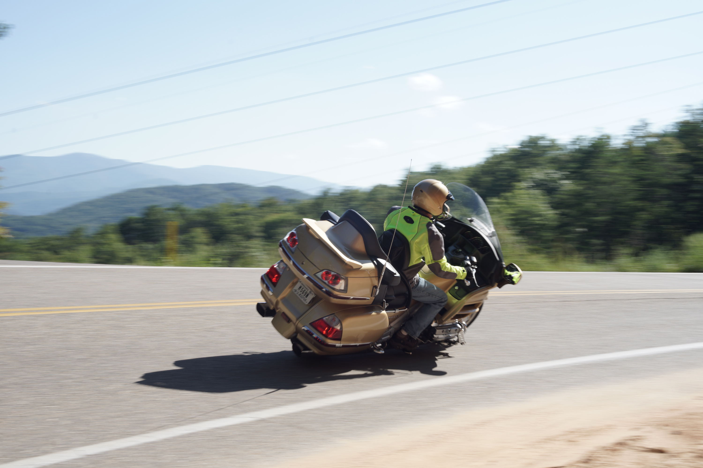
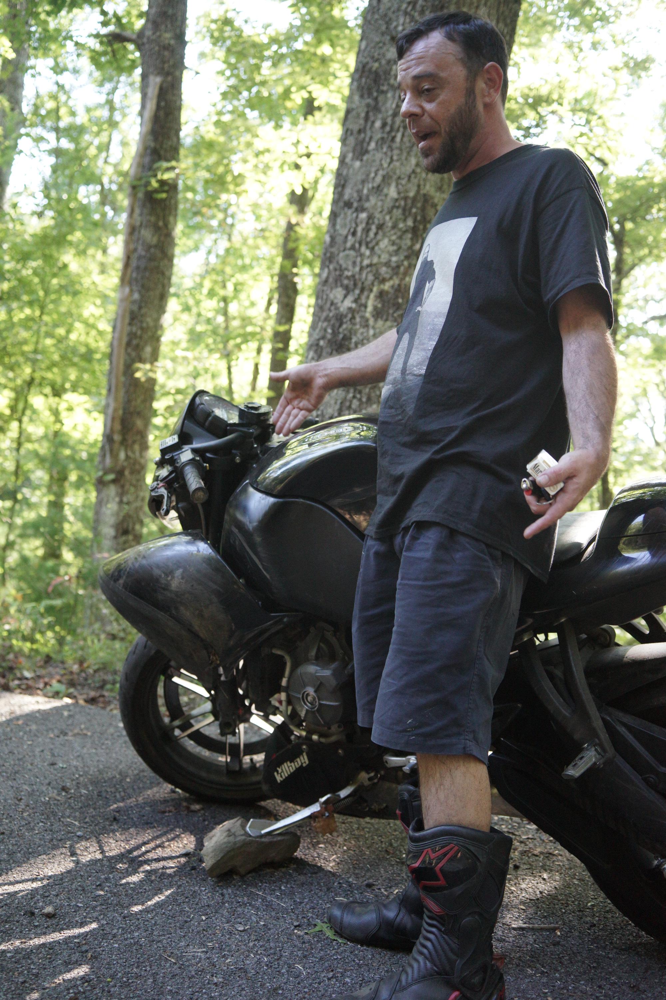
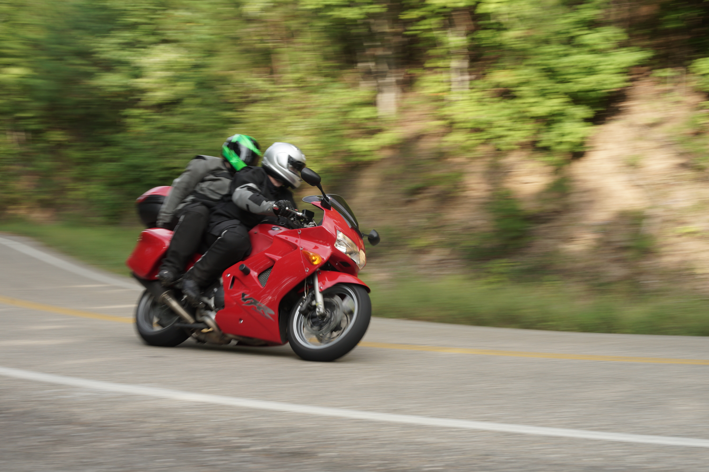
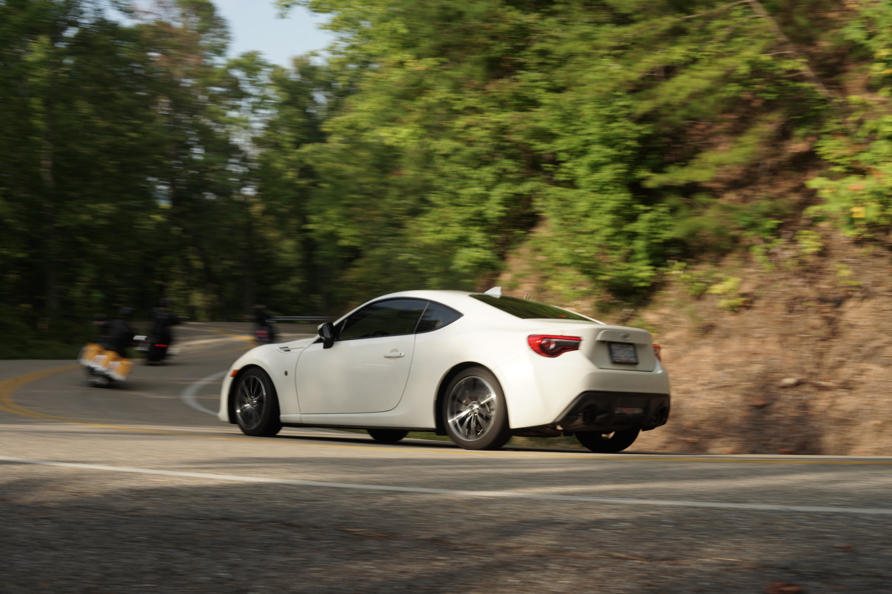

{kind=link}
Chilhowee Lake at sunrise. [Oliver Fischer]
FORNEYS GAP, NC - Deep in the Appalachian Mountains dwells a beast known as Tail of the Dragon. It might be named after a mythical creature, but the 318 curves packed into this 11-mile stretch of mountain road present an all too real challenge. Officially designated U.S. 129, the popular tourist attraction, located on the border of North Carolina and Tennessee, saw 1,080 vehicles per day in 2018, according to the Tennessee Department of Transportation. Darryl Cannon, a former motorcyclist, used to be in one of them.
“This road will mess you up if you don’t respect it,” he said. “I get why people do it. I don’t knock anybody for doing it, but I’m just of an age now where I’ve gotten it out of my system, and I’m OK with not doing it anymore.”
A biker riding the Tail of the Dragon around a corner with open sections and view of the Appalachian Mountains. [Oliver Fischer]
Cannon, who now runs his photography business killboy.com, first rode the Dragon after hearing about it online and convincing some of his biker friends to do a road trip there. They had already ridden Blue Ridge Parkway and similar twisty mountain roads, but he said the Dragon was the highlight of their trip, despite being ill-prepared in hindsight.
“It was almost entertaining just to watch my line through the turns, back then versus now,” Cannon said. “Back then I would put in multiple inputs during one turn on the motorcycle. After a few years of riding, I could see a big difference.”
Humble beginnings
Cannon rode a Kawasaki Ninja 600 sport bike back then, mostly for the image. “Originally, I got into sport bike riding more for the cruising around, looking cool part,” he said. But with such a purpose-built machine, it wasn’t long before Cannon started craving more.
Brian Wylie, an experienced rider who frequents the Tail of Dragon, has not crashed a bike in 10 years until Sept. 7, 2019. With a broken frame and leaking fuel, his bike was stranded on the Dragon. [Oliver Fischer]
“I started experiencing what it was like to feel carving a corner and how it feels like you’re flying on the road on a motorcycle,” he said. “That rush of a sort of push into a corner, I wanted to feel that more. The Dragon was an obvious choice for somebody who wants to experience that feeling.”
Cannon rode the Dragon for the first time around 1998. While he said he did not encounter any surprises, it was still an intense learning experience. “To have all these turns thrown at you at such a rapid pace, it was good practice for learning quickly,” he said. “It was a little over our heads, but we managed to stay upright and in between the ditches and not cause any problems.”
According to Cannon, it’s that rapid pace of cornering and constant sharp turns that makes Tail of the Dragon so unique and attractive for riders.
“This road, the first couple times you ride it, is all reactive,” said Brian Wylie, a carpenter and frequent rider on Tail of the Dragon. “You can’t think about your lines. You can’t think about anything else. Especially if you come from flatland, and it’s all coming at you so fast.”
Riders do not have time to think between corners, but that’s part of the allure.
“It’s so immersive that that’s one of the big appeals of it,” Wylie said. “It’s a roller coaster that I can control. And then you spend time riding it, and it just becomes magic.”
The Dragon is surrounded by dense forests. [Oliver Fischer]
For Cannon, his attraction to bikes comes from the feeling of flying. “It’s probably as close as I’m going to get to piloting something,” he said. Cannon said it’s a feeling that cannot quite be matched by other types of vehicles, including sports cars.
“There’s hard forces in all directions in a car,” Cannon said. “It’s more violent, and so your inputs are immediate reactions in the change of direction.” Riding a bike, on the other hand, involves a certain laziness or flow, according to Cannon. After making an input, the motorcycle does not immediately start to carve a corner like a car. Instead, it leans and starts carving the corner once the input is stopped.
The Dragon bites back
Even on a motorcycle, smooth handling can come to an abrupt end. Cannon, like many others on Tail of the Dragon, has been involved in a series of accidents.
Two bikers riding around a corner on the Tail of the Dragon. [Oliver Fischer]
“I laid over to go into the turn, and I had my knee on the ground, and then the bike just started leaning over further and I was like ‘What’s going on here?’” Cannon said. He said he had all his gear on in that moment, including his back protector, but he was sliding back first across the road, heading straight for the trees.
“I just remember sliding backwards with my feet in front of me, and I was like ‘Oh, this is gonna be ugly,’ and I went sailing off the road, flying through the air,” Cannon said. He hit a fallen tree with his lower back, flipped over it and tumbled a couple times.
“It knocked the breath out of me,” he said. “I remember thinking this might be it. I may be knocked out, and nobody’s gonna find me.” His bike followed him and hit a different tree. It split in half. “I remember crawling up to the road, and somebody stopped and saw me and helped me from there,” Cannon said. “That was one of the final straws.”
Tail of the Dragon used to be primarily a biker destination, but cars have become just as popular in recent years.
Around the same time, Cannon’s wife also got into a few accidents on the Dragon. Another driver lost control and hit her. A few months after that, she hit a boar at night on Cannon’s bike. “Those things just kind of hit us all around the same time frame and we were just like, ‘You know, maybe we need to take a break for a while.’” They stopped riding for about eight years.
Cannon is slowly getting back onto bikes, but he said he isn’t planning on attacking the Dragon head-on any time soon.
“It’s just too risky on the motorcycle,” he said.
{kind=link}
{kind=link}
{kind=link}
{kind=link}
{kind=link}